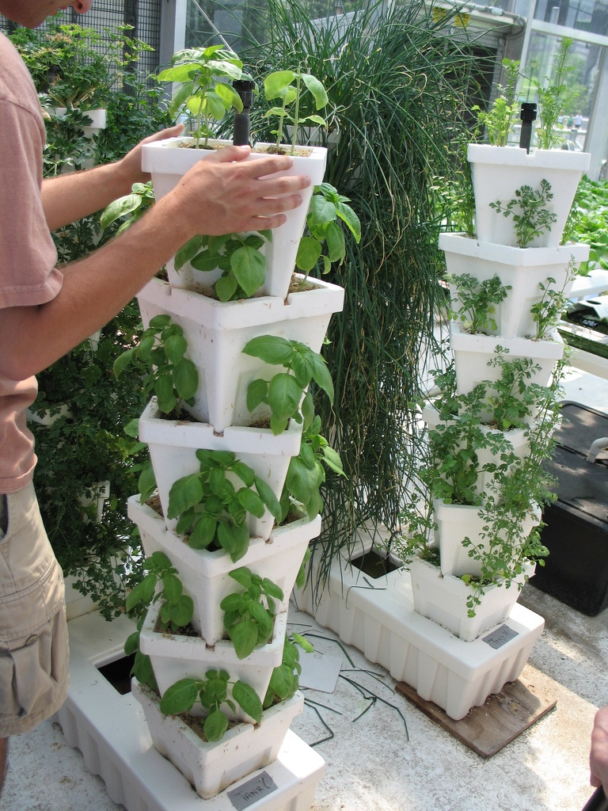
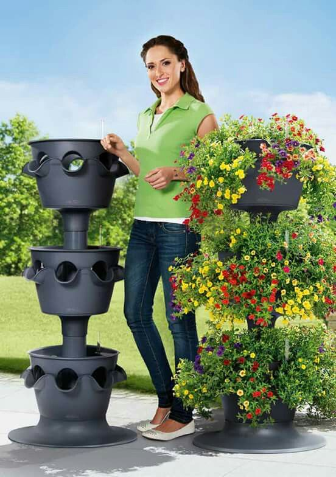
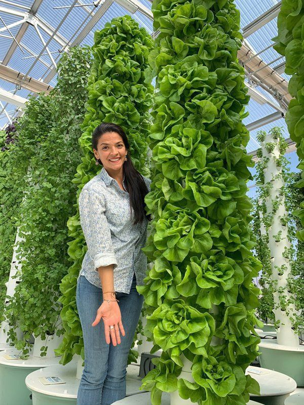
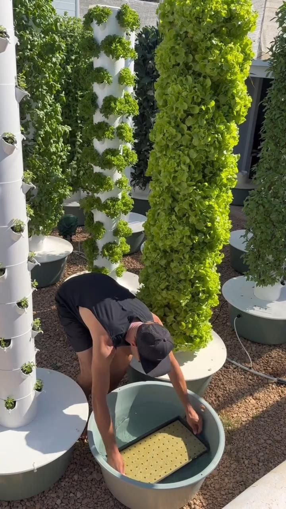
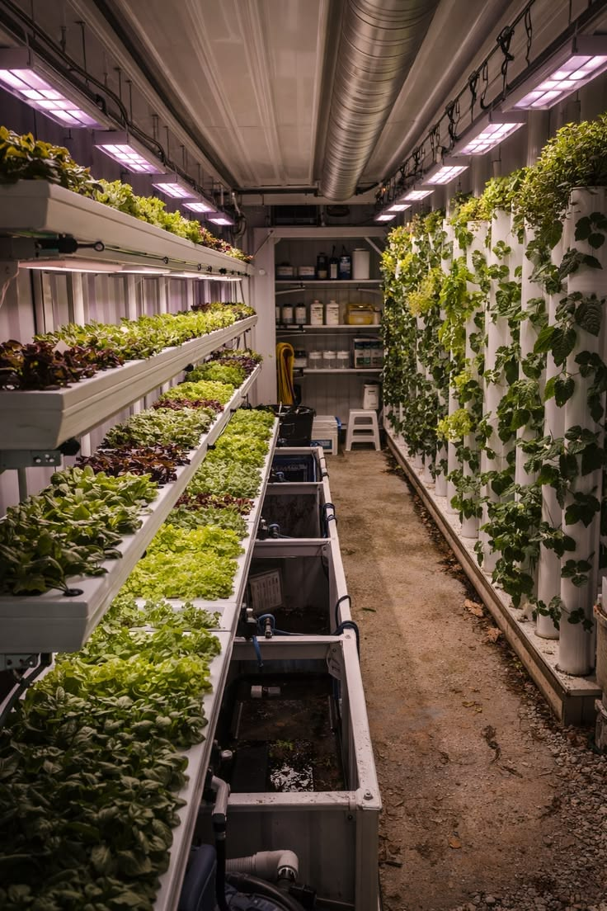
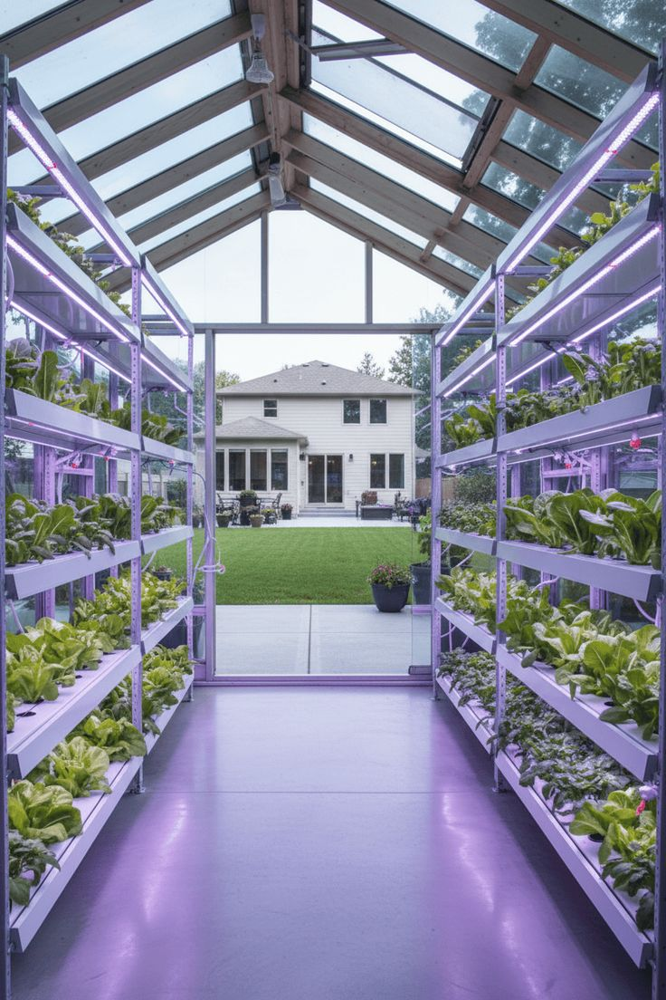
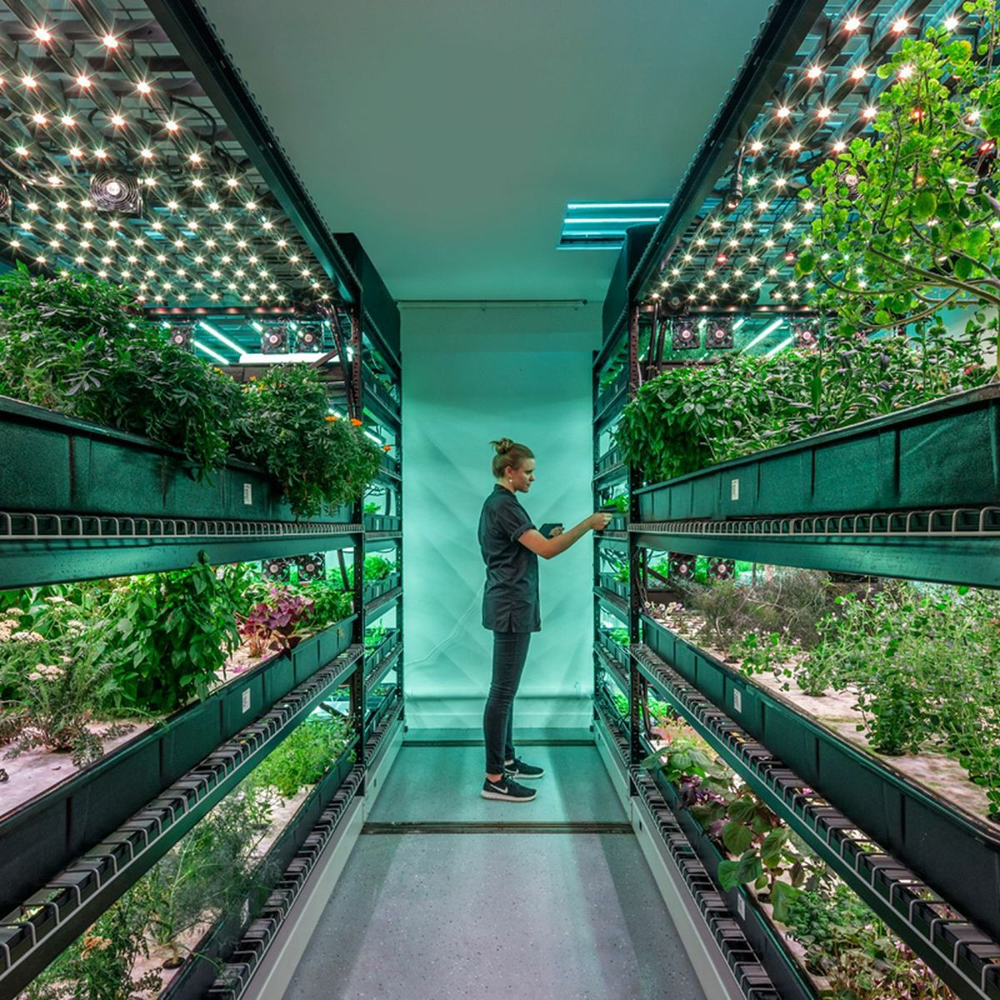
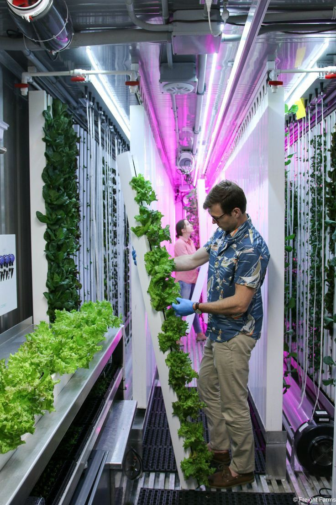
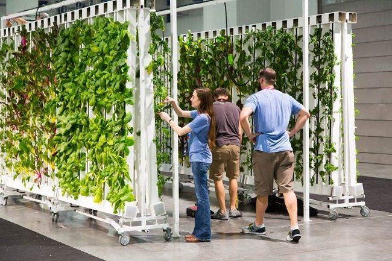
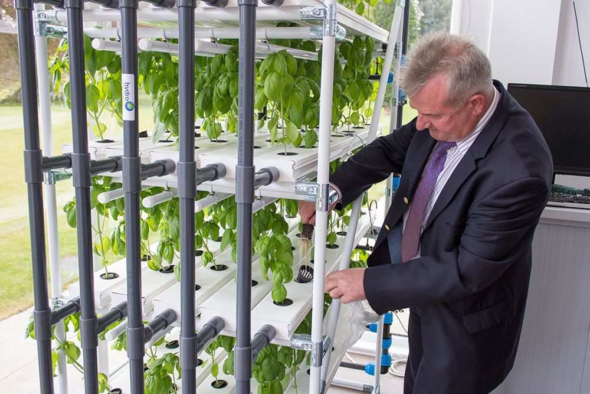

Cómo crece una planta hidropónica
Las raíces se mantienen en contacto con agua rica en nutrientes, mientras el oxígeno y la luz se controlan para favorecer un desarrollo más rápido y sano.
Educación Hidropónica
Descubre cómo los insumos hidropónicos revolucionan la agricultura sostenible y encuentra formas de involucrarte con Honatu para impulsar proyectos, talleres y comunidades de cultivo sin suelo.
¿Qué es la Hidroponía?
La hidroponía permite cultivar sin tierra, usando soluciones nutritivas que entregan justo lo que las plantas necesitan. Es una agricultura eficiente y accesible para espacios urbanos.

Las raíces se mantienen en contacto con agua rica en nutrientes, mientras el oxígeno y la luz se controlan para favorecer un desarrollo más rápido y sano.

Menos plagas, menos enfermedades y un uso de recursos más eficiente hacen que la hidroponía sea ideal para pequeños huertos y proyectos educativos.

Desde huertos escolares hasta invernaderos urbanos, la hidroponía funciona en balcones, techos y espacios pequeños con resultados consistentes.

Un sistema básico requiere pocos insumos y se puede escalar paso a paso, lo que lo hace perfecto para quienes empiezan en el mundo hidropónico.
Insumos Esenciales
Cada insumo tiene un papel clave: nutriente, soporte, flujo de agua o control ambiental. Conoce los elementos que hacen viable un cultivo hidropónico saludable.

Fórmulas solubles que entregan nitrógeno, fósforo y potasio en las proporciones correctas. Ajusta las dosis según la fase de crecimiento y el tipo de cultivo.

Opciones como coco, lana de roca y perlita ofrecen soporte firme y una buena retención de agua sin compactarse.

Canales, bombas y válvulas controlan el movimiento constante de solución nutritiva, evitando estancamientos y garantizando raíces sanas.

Sensores de pH, EC y temperatura permiten ajustes precisos, mejorando la salud del cultivo y reduciendo errores humanos.
Involúcrate
Descubre formas concretas de colaborar en el mundo de los insumos hidropónicos: desde eventos prácticos hasta alianzas comunitarias y espacios de aprendizaje compartido.

Accede a clases presenciales y virtuales donde experimentamos con insumos, montajes y técnicas paso a paso para garantizar resultados sostenibles.

Únete a huertos cooperativos, jardines escolares y espacios verdes donde los insumos hidropónicos impulsan nuevos emprendimientos locales.
Colabora como guía o recibe acompañamiento experto para elegir insumos, medir resultados y escalar tus prácticas con confianza.
Conecta con otras personas interesadas en hidroponía, comparte insumos y aprende de experiencias reales en nuestra comunidad.
Ventajas
Estas soluciones permiten producir más con menos, acercan la agricultura a espacios urbanos y crean oportunidades de negocio y aprendizaje en comunidad.
Un sistema hidropónico recircula la solución nutritiva y reduce el consumo de agua en comparación con cultivos tradicionales.
Al cultivar sin suelo, se minimiza el riesgo de enfermedades transmitidas por la tierra y se controla mejor la salud de las plantas.
Puedes instalar huertos en balcones, azoteas o interiores; los insumos hidropónicos se adaptan a espacios pequeños y versiones comerciales.
Aprende Más
Encuentra materiales, eventos y canales de comunicación que te acompañan en cada etapa de tu aprendizaje sobre insumos hidropónicos.
Descarga guías claras para iniciar sistemas simples, elegir insumos y mantener cultivos fructíferos desde el primer día.
Participa en sesiones donde expertos de Honatu comparten técnicas, casos de éxito y soluciones prácticas para el trabajo con insumos hidropónicos.
Conecta con personas que ya usan insumos hidropónicos y recibe respuestas a tus dudas en un espacio de colaboración real.
Ubicación
Visítanos para conocer más sobre nuestras soluciones de cultivo sostenible y acciones a favor del medio ambiente.